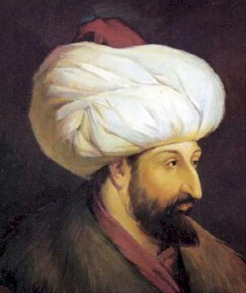

|

|
FATİH SULTAN MEHMET
Fatih Sultan Mehmed, yedinci Osmanlı padişahı. Divan edebiyatında Avnî mahlasını kullanmıştır.
Sultan II. Murad ve Hüma Hatun’un oğludur.İstanbul'u fethetmesinden sonra Ebû ?l-Feth (Fethin Babası) ve daha sonraki asırlarda Fâtih lakabıyla anılmıştır.
Ayrıca döneminde Avrupa'da Büyük Türk (Grand Turco) olarak da zikredilmiştir.İstanbul'un fethi, Orta Çağ’ın sonu Yeni Çağ'ın başlangıcı olmuştur.Bundan dolayı Fatih,
"çağ açan hükümdar" olarak da tanınır. İstanbul'un fethinden sonra Kayser-i Rum (Roma İmparatoru) ünvanını da kullanmaya başlamıştır. İstanbul'un fethiyle 1000
yıllık Doğu Roma (Bizans) İmparatorluğu son bulmuştur. Fatih, çıkardığı yasalarla devleti önemli ölçüde yeniden biçimlendirmiştir.
|